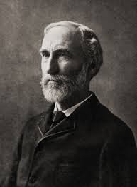

WILLARD GIBBS

Introduction
Josiah Willard Gibbs was an American theoretical physicist and chemist. He is best known for his work on chemical thermodynamics theory that helped convert physical chemistry from an empirical science to a deductive science, to a large extent.
About Gibbs
The case of Willard Gibbs shows that this weakness was due to tradition and training, not to any lack of native talent. Gibbs, son of a Yale professor of sacred literature, descended from a long line of New England college graduates. He studied at Yale, received his Ph.D. there in 1863—one of the first doctorates granted in the United States—tutored Latin and natural philosophy there, and then left for three decisive years in Europe. Up to that time Gibbs had shown interest in both mathematics and engineering, which he combined in his dissertation "On the Form of the Teeth of Wheels in Spur Gearing." The lectures he attended in Paris, Berlin and Heidelberg, given by some of the greatest men of the day, changed him once and for all. In 1871, two years after his return from Europe, he became Yale's first Professor of Mathematical Physics. He had not yet published any papers on this subject. For nine years he held the position without pay, living on the comfortable inheritance his father had left; only when Johns Hopkins University offered Gibbs a post did Yale give him a small salary.
Gibbs never married. He lived out a calm and uneventful life in the house where he grew up, which he shared with his sisters. He was a gentle and considerate man, well-liked by those who knew him, but he tended to avoid society and was little known even in New Haven. Nor was he known to more than a few of the world's scientists—partly because his writings were extremely compact, abstract and difficult. As one of Gibbs' European colleagues wrote, "Having once condensed a truth into a concise and very general formula, he would not think of churning out the endless succession of specific cases that were implied by the general proposition; his intelligence, like his character, was of a retiring disposition." The Europeans paid for their failure to read Gibbs: A large part of the work they did in thermodynamics before the turn of the century could have been found already in his published work.
Gibbs work
Gibbs' chief scientific papers appeared in the Transactions of the Connecticut Academy of Arts and Sciences. The articles were expensive to set in type because of their length and their wealth of mathematical formulas, so funds were raised by subscription from Yale professors and New Haven businessmen, few or none of whom could understand the publication they were subsidizing. The Connecticut Academy's Transactions were little read, but Gibbs tried to make his results known by mailing many reprints and by publishing a summary elsewhere.
In these papers Gibbs' starting point for analyzing a system was the state of equilibrium, which (as he pointed out) is characterized by a maximum in the system's entropy. This principle, he noted, was already known to physicists, but "its importance does not appear to have been appreciated. Little has been done to develop the principle as a foundation for the general theory of thermodynamic equilibrium." He proceeded to correct this situation, demonstrating for the first time the uses of the differential relationship in a system between energy U, pressure P, volume V, temperature T, and the entropy S, the last a quantity then scarcely understood: dU = TdS - PdV. Adding terms to allow for variations in the chemical constitution of the system, he derived an astonishing variety of consequences. Many phenomena which had never been within the domain of thermodynamics were now annexed by this equation, including elastic and surface phenomena, changes of phase, and a great part of chemistry.
Once this was completed Gibbs turned to another subject. In 1892 he wrote Lord Rayleigh with characteristic modesty, "Just now I am trying to get ready for publication something on thermodynamics from the a priori point of view, or rather on 'Statistical Mechanics' . . . I do not know that I shall have anything particularly new in substance, but shall be contented if I can so choose my standpoint (as seems to me possible) as to get a simpler view of the subject." Ten years later this work resulted in a classic book which put statistical mechanics on a new and more general basis.
References
http://www.aip.org/history/gap/Gibbs/Gibbs.html